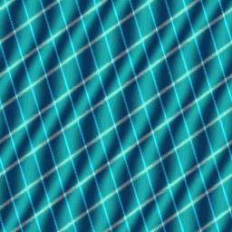

01
Survey Planet Sphere
A textured planet with a separate normal map.
NORMAL MAPPINGTEXTURE MAPPING
A textured planet, ring, satellite, and dancing cat.
A textured planet with a separate normal map.
NORMAL MAPPINGA moving GIF texture with bump mapping.
BUMP MAPPING + ANIMATION
A floating cat that dances in the scene.
ANIMATED TEXTUREA moving satellite with solar panels, a body, and an antenna.
TEXTURED PANELS